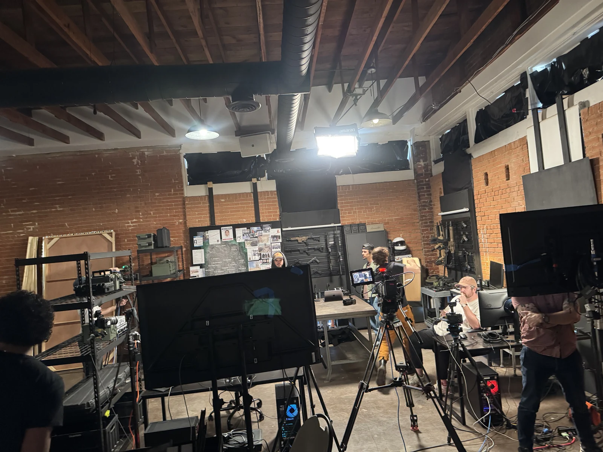
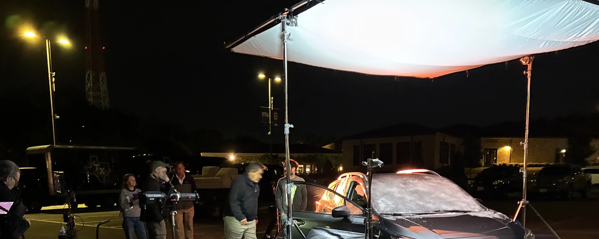
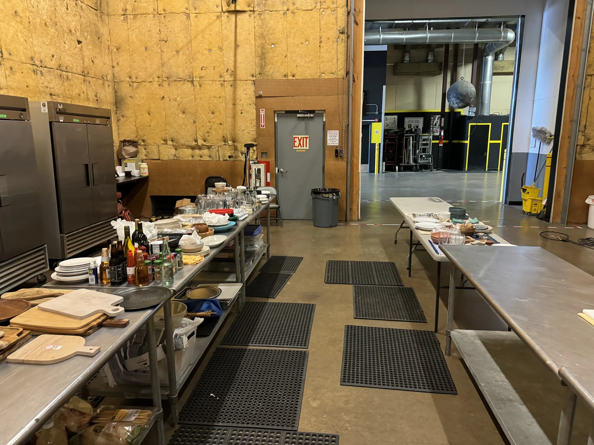

Period scenery
Stage interiors
Denton, Texas / Dallas–Fort Worth
Production design.
Art direction.
Stage interiors

Built environments

Gaming production

Retail environments

Vehicle & weather detail

Props & preparation
 View campaign
View campaign Additional commercial work: Wrangler, 2025. Production details & credits ↗
Background
Scott Cox works across film, television and commercial production. Based in Denton, Texas, his background spans art direction and the practical work of building, dressing and preparing sets.
Credited professionally as Travis Scott Cox.
Production inquiries
Art direction, production design
and art-department inquiries.
Send the role, location, and prep or shoot dates.
Denton, Texas · Dallas–Fort Worth